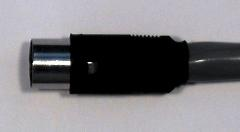

ELEC 240 Lab
Interlude
The Breadboard
Most instruments have banana plugs or BNC connectors, so we can interconnect them with patch cords. But as we begin to build our own circuits, we find that many components have different kinds of connectors and most just have pieces of wire coming out of them.
To connect a single component (or maybe two) to an instrument we can use the BNC clip leads or alligator clips on the banana plug patch cords, But for anything more complex, we need a scheme designed for connecting things with pieces of wire. The system we will use goes by a number of names: solderless breadboard, AP strip (after the original manufacturer), or proto-board. We will simply call them "breadboards".
Our breadboards actually consist of two parts: the lower portion which is the breadboard proper, and the upper part which contains the interface modules.
These are discussed in detail here.
In either case, we make connections between one component and another by pushing the ends of pieces of wire (possibly attached to a component) into the holes in the breadboard. Although this is simple in concept, there is a bit of art required to do it properly. See here for information on the art of wiring.
The Interface Modules
The purpose of the Interface Modules is to bring signals from other parts of the Lab Station to the breadboard for convenient wiring. To do this we must connect those components to the Interface Modules via the appropriate cables. Here is a drawing of the interface module with the names of the various connectors.
![\includegraphics[scale=0.500000]{interface.ps}](../../figs/img158.png) {width="449"
height="194"}
{width="449"
height="194"}
There is a table of connector pin assignments here.
In the next experiment we will use the interface module to access the oscilloscope, the function generator, and the Lab PC sound card. To connect the sound card, plug the round cable from the Lab PC (with the 8-pin round connector)

into J2-1 on the interface module. To connect the oscilloscope, use a
BNC patch cord to connect CH 1 of the scope to J1-1 of the Interface
module. Similarly, connect CH 2 to J1-2.